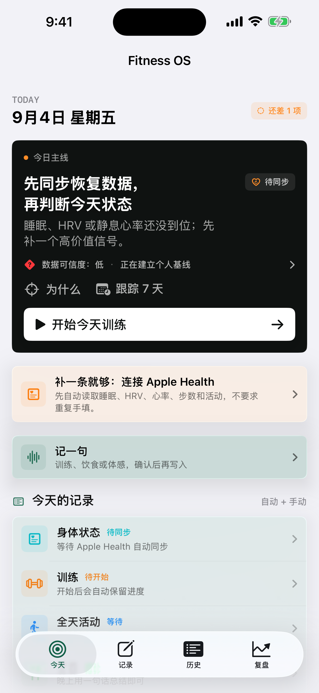

一句话输入先解析状态、训练与营养，预览确认后才写入；支持补录日期与编辑营养值。
CASE 02 · iOS PRODUCT / HEALTH
Fitness OS
不再堆更多健康图表，而是把训练、营养、睡眠和恢复信号压缩成：今天最值得做的一个动作是什么？
角色产品发起人／真实用户／系统设计者
技术SwiftUI／HealthKit／本地 JSON
状态真机运行，未上架
TRY THE DECISION
换一组信号，看看建议为什么改变。
恢复良好、恢复不足、明显关节痛，或者尚未记录：亲手调整状态，查看命中的规则，再模拟一次行动与复盘。
无需登录。使用合成数据与确定性规则，不读取 Apple Health、不调用语言模型，也不保存你的输入。

THE PROBLEM
数据不是建议，建议也不是行动。
Apple Health、训练记录、饮食和主观状态各自存在，但它们不会自动回答“今天该训练、调整还是休息”。如果直接让模型每天重新建议，又会产生漂移和无法追责的问题。
因此我把产品约束为：先显示事实，再显示推断和数据可信度，最后只给一个最小行动；一次只运行一个 7 天干预，并允许结论是“证据不足”。
DECISION LOOP
可解释、可回看、可回滚。
HealthKit＋手动记录→28 天个人基线→事实／推断分层→一个当日动作→7 天结果复盘
WHAT SHIPPED
一个完整的本地健康记录与决策循环。
重量、次数、RPE、休息计时、餐食原文、宏量与微量营养覆盖进入统一时间线。
可疑 Health 样本不会自动变成“恢复债”；界面明确显示来源、缺口和仍需补充的信息。
本地 JSON、每日与迁移快照、完整导入导出、恢复前保护和事务式回滚。
PRODUCT JUDGMENT
先让规则可解释，再考虑模型增强。
演示中没有今日记录时，先要求补记录，不把缺失值当成良好的恢复状态。
任一红色信号优先。睡眠好不能抵消明显关节痛，不用一个漂亮总分掩盖风险。
把建议收敛成一个当日动作，让人知道下一步做什么，也让之后的复盘有明确对象。
一次“感觉更好”只是主观反馈，不等于产品有效；真实使用仍需持续记录和观察。
原生 App 使用确定性规则生成准备度、营养调整与周复盘。公开 Web 样板只演示人工确认输入下的每日训练状态规则，以及模拟行动反馈；不包含 HealthKit 接入、28 天基线计算或真实 7 天追踪。
这不是医疗诊断产品。本次更新的是公开展示与体验层，没有改动原生 App。下一步优先收集真实 7 天结果，再判断规则是否需要调整。
VERIFIED STATUS
当前真实状态
- Xcode 26.6、iOS 26.5 Simulator Debug 构建通过。
- 核心演化逻辑测试通过；多页面、大字号与 Reduce Motion 路径完成 QA。
- 2026-09-04 完成 USB 覆盖安装、首次启动与旧记录完整性回读。
- 尚未上架 App Store，也没有真实外部用户效果数据。